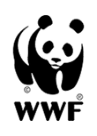

For a Living
Planet
For a Living
Planet
지구를 위한 우리의 신념
: OUR VALUES
WWF는 용기, 정직, 존중, 협업의 가치를 바탕으로 지속 가능한 미래를 위한 모든 활동을 이어가며, 자연과 사람 모두를 위한 변화를 꿈꾸고 있습니다.
용기
COURAGE
정직
INTEGRITY
존중
RESPECT
협업
COLLABORATION
WWF : FOR A
자연과 사람이 함께 숨 쉬며 공존하는 미래를 꿈꿉니다.
HEALTHY PLANET
사람과 자연이 조화롭게 살아가는 미래를 만드는 것입니다.
THRIVING WILDLIFE.
지속 가능한 삶의 터전을 위해, 인간과 자연이 함께 나아갑니다.
지구를 지키기 위한 WWF 캠페인
: CAMPAIGN
WWF는 기후위기와 환경파괴의 심각성을 알리고, 변화를 위한 행동을 촉구하는 캠페인을 펼칩니다. 지속가능한 미래는 우리의 작은 실천에서 시작됩니다.
북극곰 보호
PROTECTINGPOLAR BEAR
기후위기
ENVIRONMENTEMERGENCY
멸종위기
PROTECTIONENDANGERED
미래식량
REVOLUTIONNEXT FOOD
EVERY STEP WE TAKE TODAY
작은 관심 하나가 지구를 지키는 큰 울림이 됩니다. 당신의 후원은 멸종 위기의 생명들을 보호하고, 훼손된 자연을 가꾸고 회복시키는 첫걸음이 됩니다. 이 세상을 바꾸는 건 거창한 힘 보단, 따뜻한 마음과 지속적인 실천과 따뜻한 연대입니다.
WWF는 인류가 초래한 기후위기, 환경 파괴의 심각성을 더 많은 이들과 공유하고, 함께 변화를 만들기 위해 지식의 공공화를 실천하고 있습니다. 누구나 환경 문제를 이해할 수 있도록 연구 결과, 정책 제안, 보전 활동 등을 투명하게 공개하며, 지속가능한 미래를 위한 시민 참여를 이끌어가고 있습니다.
KNOWLEDGE PUBLIC
사라져가는 자연을 지키는 WWF의 실천
: CONSERVATION
WWF는 무분별한 개발과 기후위기로부터 야생 생물과 서식지를 보호하고 있으며, 인간과 자연이 함께 살 수 있는지구를 위한 보전 활동을 꾸준히 계속 이어나가고 있습니다.
LIVING OCEANS
살아 숨 쉬는 바다는 지구 생명의 보고이자, 기후위기 대응에 있어 없어서는 안 될 자연 해법입니다. 산호초, 해조류, 플랑크톤은 이산화탄소를 흡수하며 지구의 온도 균형을 유지하는 데 중요한 역할을 합니다.
PLASTIC FREE
2018년 국내 플라스틱 수요는 633만 톤으로 2011년부터 연평균 2.5%씩 증가했습니다. 2030년엔 플라스틱 국내 수요는 864만 톤에 달할 것으로 예상되는 상황입니다.
FOREST CONSERVATION
울창한 숲과 열대우림은 자라나는 동안 대기의 이산화탄소를 흡수하며, 지구 탄소 순환에 핵심적인 역할을 하고 있습니다.
JUST5 YEARSLEFT
현재 지구는 되돌릴 수 없는 티핑 포인트를 향해 나아가고 있습니다. 세계는 점점 더 위험한 경로에 접어들고 있으며, 시간은 이제 불과 5년밖에 남지 않았습니다. 실패의 가능성은 현실이며, 그 결과는 상상조차 할 수 없습니다. 우리는 국제사회로서 앞으로 나아가야 할 길에 대해 이미 합의했습니다.